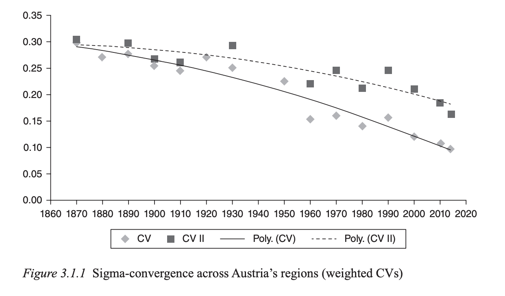
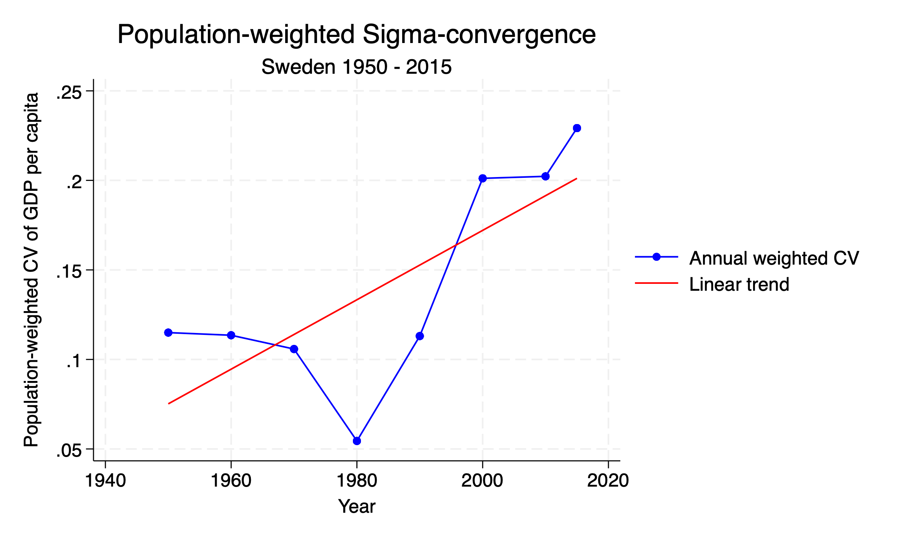
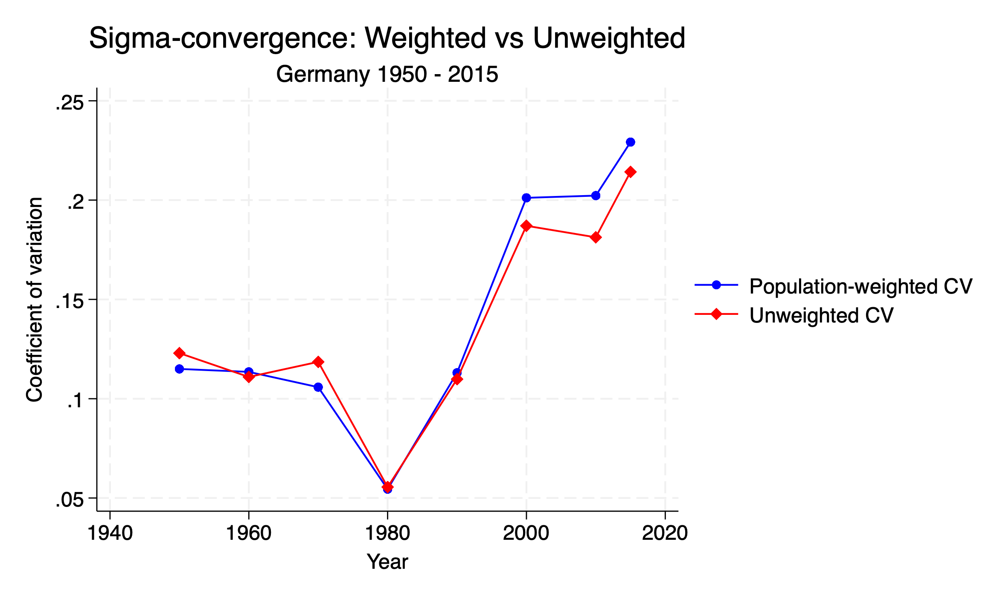

clear all
# Set your working directory and read in the data
cd "/Users/jonathanjayes/Downloads/Lab-1"
use "regional_dataset", clear
# Select country of interest
keep if country == "Sweden"
# Choose time period
keep if year >= 1950
# xtset tells Stata we will do time series operations
xtset _ID yearSigma-Convergence
I received a request to calculate and plot sigma-convergence for Sweden using Stata.
For a bit of background, from your textbook, the chapter called “From Empire to Republic” by Max-Stephan Schulze, we have the following:
One way to think about regional inequality is in terms of so-called sigma-convergence, i.e. a reduction over time in the dispersion of per capita income (or output) levels across regions (Barro and Sala-i-Martin 1991; Sala-i-Martin 1996). A typical measure of sigma-convergence is the population-weighted coefficient of variation. A decline in the coefficient is indicative of a reduction in regional income dispersion. Figure 3.1.1 shows two alternative measures: one that covers all years in the range and where Lower Austria includes Vienna (CV); the other where Lower Austria and Vienna are treated as separate NUTS 2 units (CV II)

We can calculate the population weighted coefficient of variation as follows in Stata:
Setup
Calculating the coefficient of variation
The coefficient of variation is a measure of relative variability. It is calculated as the ratio of the standard deviation to the mean. In this case, we are calculating the coefficient of variation of GDP per capita across regions in Sweden for each year in the dataset since 1950. The formula is:
\[CV_t^w = \frac{\sigma_t^{y,w}}{\overline{y_t^w}}\]
Where: - \(CV_t^w\) is the population-weighted coefficient of variation at time \(t\)
\(\sigma_t^{y,w} = \sqrt{\sum_{i=1}^{N}w_{i,t}(y_{i,t} - \overline{y_t^w})^2}\) is the population-weighted standard deviation of GDP per capita levels, and
\(\overline{y_t^w} = \sum_{i=1}^{N}w_{i,t}y_{i,t}\) is the population-weighted mean GDP per capita
We can calculate this in Stata using the following code:
# For population-weighted sigma-convergence
# Step 1: Calculate population weights for each region in each year
bysort year: egen total_pop_year = sum(regional_population)
gen pop_weight = regional_population / total_pop_year
# Step 2: Calculate weighted mean GDP per capita for each year
bysort year: egen w_mean_gdp = sum(regional_gdp_cap_1990 # pop_weight)
# Step 3: Calculate weighted variance and then weighted standard deviation
gen sq_dev = (regional_gdp_cap_1990 - w_mean_gdp)^2
bysort year: egen w_var_gdp = sum(sq_dev # pop_weight)
gen w_sd_gdp = sqrt(w_var_gdp)
# Step 4: Calculate population-weighted coefficient of variation
gen w_cv_gdp = w_sd_gdp / w_mean_gdpPlotting the coefficient of variation
It is a stylistic choice to plot the coefficient of variation as a line graph with points, and to add a linear trend line to show the overall trend. This is done with the twoway command in Stata. You can also just use a scatter plot and a line of best fit if you prefer.
When plotting this over time, a downward trend in w_cv_gdp would indicate sigma-convergence (decreasing inequality), while an upward trend would indicate sigma divergence (increasing inequality).
# Step 5: Create the weighted sigma-convergence plot
twoway (connected w_cv_gdp year, lcolor(blue) mcolor(blue) msymbol(circle)) ///
(lfit w_cv_gdp year, lcolor(red)) ///
, title("Population-weighted Sigma-convergence") subtitle("Sweden 1950 - 2015") ///
ytitle("Population-weighted CV of GDP per capita") xtitle("Year") ///
legend(label(1 "Annual weighted CV") label(2 "Linear trend"))
Compare to unweighted coefficient of variation
Finally, we can compare the population-weighted coefficient of variation to the unweighted coefficient of variation. The unweighted coefficient of variation is calculated in the same way as the weighted version, but without the population weights. We can then plot both measures on the same graph for comparison.
# Step 6: Compare weighted and unweighted measures
# First calculate the unweighted CV as before
bysort year: egen mean_gdp = mean(regional_gdp_cap_1990)
bysort year: egen sd_gdp = sd(regional_gdp_cap_1990)
gen cv_gdp = sd_gdp / mean_gdp
# Then plot both measures for comparison
twoway (connected w_cv_gdp year, lcolor(blue) mcolor(blue) msymbol(circle)) ///
(connected cv_gdp year, lcolor(red) mcolor(red) msymbol(diamond)) ///
, title("Sigma-convergence: Weighted vs Unweighted") subtitle("Sweden 1950 - 2015") ///
ytitle("Coefficient of variation") xtitle("Year") ///
legend(label(1 "Population-weighted CV") label(2 "Unweighted CV"))
Relationship with Beta Convergence
Beta (\(\beta\)) convergence is necessary but not sufficient for sigma-convergence. Mathematically, this relationship can be expressed as:
\[\sigma_{t+1}^2 = (1-\beta)^2\sigma_t^2 + \sigma_{\varepsilon}^2\]
Where: - \(\beta\) is the beta convergence coefficient - \(\sigma_{\varepsilon}^2\) is the variance of random shocks
This equation shows that even with strong beta convergence (high \(\beta\)), sigma-convergence may not occur if random shocks (\(\sigma_{\varepsilon}^2\)) are sufficiently large.